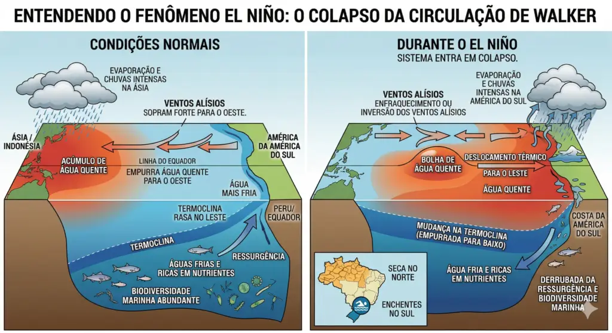
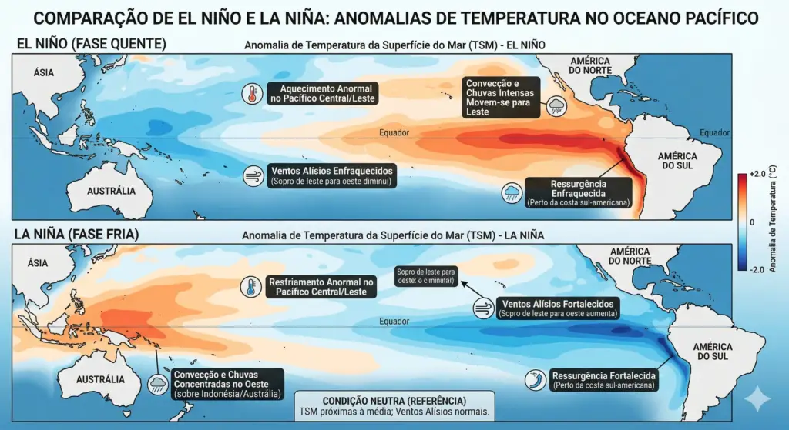

EL NIÑO E LA NIÑA: O FENÔMENO ENOS
O El Niño-Oscilação Sul (ENOS) é um fenômeno de interação entre o oceano e a atmosfera no Pacífico Equatorial. Ele é responsável por provocar grandes variações no clima global e se divide em três fases: El Niño, La Niña e Neutralidade.

Entendendo as Diferenças
- El Niño: Aquecimento anormal das águas superficiais do Pacífico e enfraquecimento dos ventos alísios.
- La Niña: Resfriamento anormal das águas do Pacífico devido ao fortalecimento dos ventos alísios e aumento da ressurgência de águas profundas.
- Neutralidade: Quando as temperaturas oceânicas permanecem dentro da média esperada.
Comparação El Niño e La Niña

Impactos Principais no Brasil
Os efeitos do ENOS variam drasticamente conforme a região do país:
- Região Sul: O El Niño provoca aumento expressivo de chuvas, trazendo riscos de enchentes, vendavais e tempestades. A La Niña gera o efeito oposto, aumentando os riscos de estiagem.
- Regiões Norte e Nordeste: O El Niño reduz o volume de chuvas, provocando secas severas. A La Niña tende a aumentar as precipitações nessas regiões.
- Centro-Oeste e Sudeste: Apresentam respostas variáveis dependendo da estação e da intensidade de outros sistemas atmosféricos.
Monitoramento e Prevenção
- Identificação científica: Meteorologistas acompanham anomalias de temperatura do mar (região Niño 3.4), ventos alísios, boias oceânicas e imagens de satélite.
- Previsão probabilística: Modelos climáticos estimam a chance de ocorrência dos fenômenos para orientar o planejamento agrícola e de gestão de recursos hídricos.
- Ações regionais: Como não é possível evitar o fenômeno natural, a prevenção foca na adaptação local aos riscos de tempestades intensas ou secas prolongadas.
Agenda e Projeção do Ciclo ENOS
Acompanhe a evolução do fenômeno com base nos boletins de monitoramento:
Decreto Oficial do El Niño
A NOAA confirmou o início oficial do fenômeno devido ao aquecimento contínuo das águas superficiais do Pacífico Equatorial.
Intensificação e Impactos na América Latina
O fenômeno ganha força significativa, alterando drasticamente os padrões de chuva e temperatura no continente.
Pico de Intensidade (Probabilidade de 95%)
Alta probabilidade de um evento de grande magnitude, podendo se equiparar aos maiores ciclos registrados desde 1950.
Declínio e Efeitos Residuais
Previsão de enfraquecimento gradual das anomalias térmicas, embora os impactos no clima persistam até o final do primeiro trimestre.
Fonte dos dados de projeção: Boletins de Monitoramento ENOS (NOAA / CPC / CPTEC-INPE).
Notícias e Atualizações Recentes
Acompanhe em tempo real as últimas publicações e boletins sobre o fenômeno ENOS:

Buscando últimas notícias sobre El Niño...
Atualização automática
Conexão Clima: Ação Humana, El Niño e Tecnologia
O aquecimento incomum das águas oceânicas tem gerado cenários raros, como a formação sequencial de três furacões de grande intensidade ao mesmo tempo. Entenda o papel da ação humana e do El Niño nesse fenômeno.